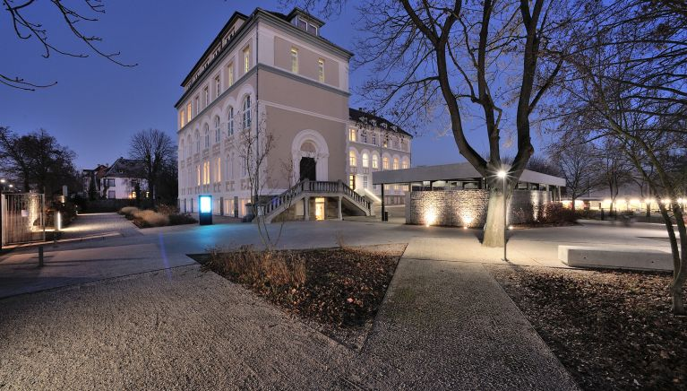
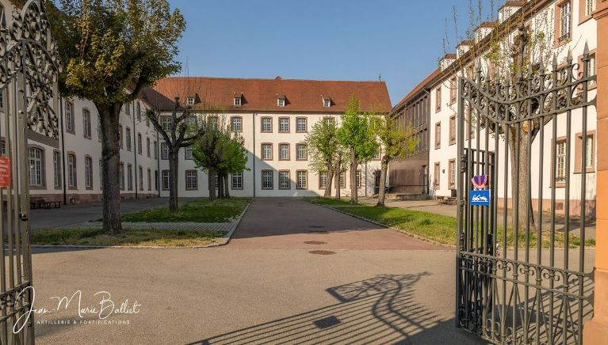
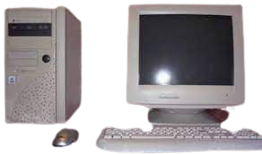

I am an first year IT student à the UIT (University Institute of Technology) of COLMAR, in the Networking and telecommunications department.
I was in the institute of Assomption (Colmar), and i had the "brevet" diploma with honours. Then, I was in the Bartholdi Highschool of Colmar, specializing in social and economical sciences, and mathematics.I got my "Baccalauréat" diploma with honours.
I've always been passonate about computing, wich is why i chose this school, focused on networking and telecommunications. The IT field I was in didn't matter to me. As long as I work behind a computer, I am happy.
I am french-american. Colmarian and Texan (Houston).


Pourquoi cette formation?

Since I was a kid, I was exposed more or less to computers.
I grew up with IT, like most children born in the 2000's.
However, my biggest inspiration is my older brother. When I was only 10, he was already graduating highschool, but he knew everything about computers. Today, he works in cybersecurity, for an american company. By validating certifications, he was able to create an interesting profile for employers.
My brother could do things that i didn't even understand, but that was impressive. He helped me when I had troubles with the family PC. Now, I feel confident in computer science, because I've delt with It for a while.
This is why i decided to work in IT, I know it and I'm passionate about It. I want to learn knew things, grow my knowledge in different IT domains.
To be honest, networking and telecommunications doesn't interest me more than coding, AI, or blockchain. It doesn't matter to me, but we do have to make a choice. I do not regret my decision, there is a wide horizon of unknown, and things to discover in IT. In a short amount of time, since september, I've learned so much that I can't even describe It. I am flourished.